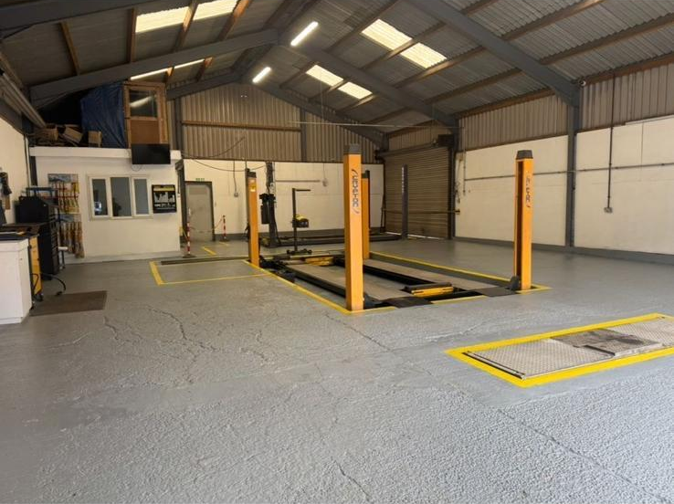

A.B Vehicle Services

We are a fully certified MOT testing station for Class 4 and Class 7 vehicles. Our thorough inspections ensure your car meets all legal safety and environmental standards. If any issues are found, we’ll explain them clearly and carry out repairs quickly so you can get back on the road with confidence.

Regular servicing is essential for keeping your vehicle running smoothly and preventing costly breakdowns. We offer interim and full services, including oil and filter changes, brake checks, and full safety inspections tailored to your vehicle’s needs.